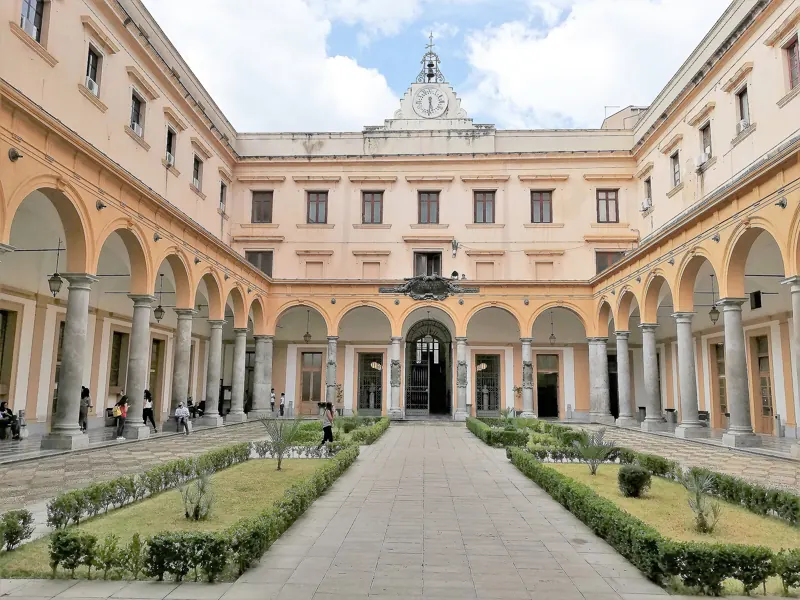
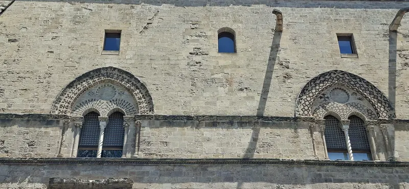
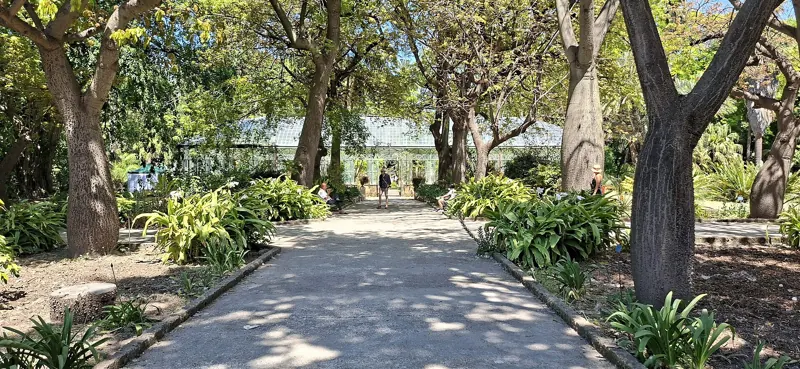
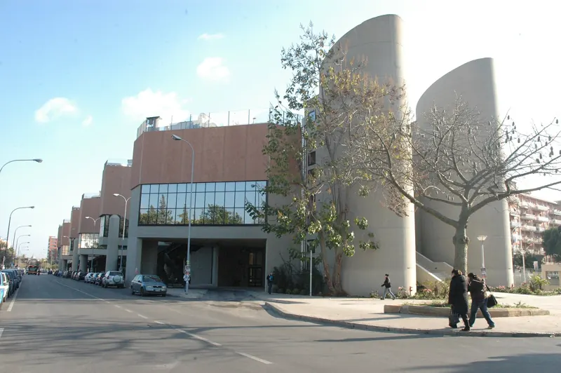
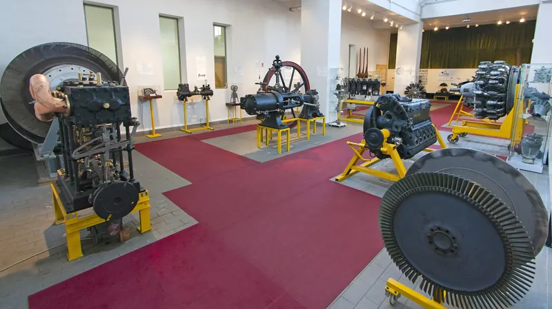
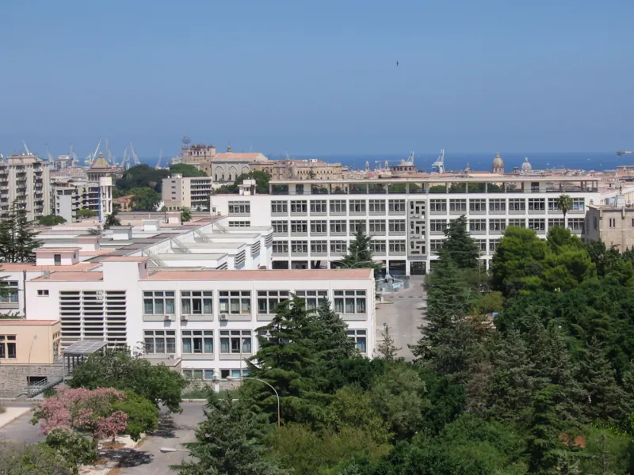
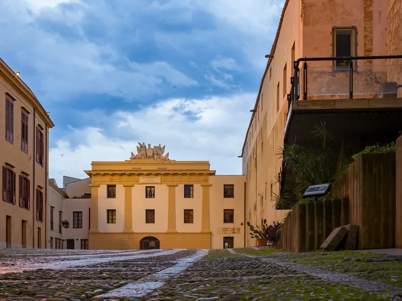

A large, public, multidisciplinary university at the heart of the Mediterranean since 1806. We educate, we research and we give knowledge back to our region and to Europe: education, research and third mission in a single identity.
We are a university that looks at the world from an island at the centre of the Mediterranean. Here the challenges of environment, health, technology and coexistence between peoples are not abstractions: they are our everyday laboratory.
major research areas, from life sciences to the humanities
17
NRRP (PNRR) projects: 3 national centres, 5 extended partnerships, 6 research infrastructures, 1 innovation ecosystem
2,800+
publications from the STEBICEF Department alone
160+
research projects from the STEBICEF Department alone
03
Third Mission
29
European and international projects mapped
8
competence clusters for Horizon Europe consortia
12
roles UniPa can take on in a consortium
30+
patents and 3 spin‑offs from the STEBICEF Department alone
1
national partnership led by UniPa: HEAL ITALIA, precision medicine
◎ Places
Where knowledge comes to life
Medieval palaces, baroque cloisters, an 18th‑century botanical garden and a modern campus overlooking the sea: the university lives inside the history of Palermo.

Casa dei TeatiniSchool of Law, in the heart of the city

Palazzo Chiaramonte‑SteriRector’s office, 14th centuryOpening of the 2023 academic yearWith European Commission President Ursula von der Leyen

Botanical GardenThe university’s living museum, since the late 18th century

Viale delle Scienze campusBuilding 19

Historical Museum of Engines and MechanismsUniversity Museum System

The campus and the seaEngineering, Viale delle Scienze

In the historic centreA university woven into the city
01 Education
Educating global citizens
One of Italy’s 11 mega‑universities: a broad range of programmes covering every major field of knowledge, rooted in Sicily and open to international experience.
Programmes
130+
degree programmes across every field of knowledge
From life sciences to engineering, from medicine to architecture, from law to economics, all the way to the humanities and cultural heritage.
21 initiatives including programmes and curricula taught entirely in English
Incoming and outgoing Erasmus+ mobility and agreements with universities worldwide
Member of the FORTHEM European University alliance
Double and joint degrees with partner universities
A university across the island
The main campus in Palermo and the regional campuses of Agrigento, Caltanissetta and Trapani bring higher education to the whole of western Sicily.
Guidance
Choosing with confidence
Entry guidance, tutoring and support throughout the student journey.
Innovation
Teaching that evolves
Research on teaching, neurodidactics, educational technologies and teacher education.
PhD
From degree to research
A Doctoral School training researchers in the same fields in which the university competes in Europe.
Careers
School, university, work
Internships, placement and graduate‑pathway studies to build employable skills.
02 Research
Twelve ways of looking ahead
Fundamental and applied research, technological development and knowledge transfer. Our position at the centre of the Mediterranean focuses our attention on the environmental, health, technological and socio‑economic challenges shared by Europe and its neighbouring countries.
Our departments, up close
A selection of our departments’ research lines. Choose a department to discover what its research groups work on.
European projects, international networks, technology transfer, living labs and citizen engagement. We work with universities, research centres, public authorities, healthcare institutions, civil society and companies, including SMEs.
European and international projects
29
projects mapped into 8 competence clusters: from quantum technologies to protecting democracy.
What we bring to a consortium
Scientific coordinationPilot and demonstration activitiesLiving labsEnvironmental and socio‑economic assessmentData collection and modellingTechnological developmentStakeholder engagementCapacity building and trainingCommunication and disseminationExploitation of resultsPolicy supportMulti‑partner governance
Flagship projects
A few initiatives that tell the story of who we are.
Technology transfer
From research to business
Patents, spin‑offs, business incubation and acceleration, innovation relays and economic development for emerging technologies.
NRRP · PNRR
Driving the recovery
17 projects across national centres, extended partnerships and research infrastructures under Italy’s National Recovery and Resilience Plan. UniPa leads HEAL ITALIA, the national precision‑medicine partnership.